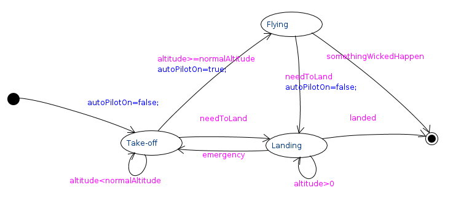

A CoCoViLa package that enable Mealy machine construction via state diagrams drawing. The package is meant to be used together with CoCoViLa (Dynamic or Discrete) System Simulator packages.
A state diagram is composed of an Initial State and one or more States. It may have an End State. The States are to be connected with Transitions. Transitions are labeled with conditional expressions, actions and order. Based on the conditional expressions it is decided which of the Transitions exiting the current State is used on execution. If there are several Transitions that are usable (their conditional expressions evaluate to true) the one, having least order value, is used. The action is executed when the Transition is used. You can find more information on Mealy machine here.